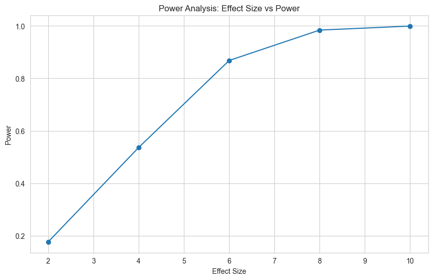

Quickstart¶
Get started with cluster-experiments in minutes! This guide will walk you through installation and your first experiment analysis.
Installation¶
Install via pip:
pip install cluster-experiments
Requirements
- Python 3.8 or higher
- Main dependencies:
pandas,numpy,scipy,statsmodels
1. Your First Analysis¶
Let's analyze a simple A/B test with multiple metrics. This is the most common use case. See Simple A/B Test for a complete walkthrough.
import pandas as pd
import numpy as np
from cluster_experiments import AnalysisPlan, Variant
# 1. Set seed for reproducibility
np.random.seed(42)
# 2. Create simulated data
N = 1_000
df = pd.DataFrame({
"variant": np.random.choice(["control", "treatment"], N),
"orders": np.random.poisson(10, N),
"visits": np.random.poisson(100, N),
})
# Add some treatment effect to orders
df.loc[df["variant"] == "treatment", "orders"] += np.random.poisson(1, df[df["variant"] == "treatment"].shape[0])
df["converted"] = (df["orders"] > 0).astype(int)
df["cost"] = np.random.normal(50, 10, N) # New metric: cost
df["clicks"] = np.random.poisson(200, N) # New metric: clicks
# 3. Define your analysis plan
plan = AnalysisPlan.from_metrics_dict({
"metrics": [
{"name": "orders", "alias": "revenue", "metric_type": "simple"},
{"name": "converted", "alias": "conversion", "metric_type": "ratio", "numerator": "converted", "denominator": "visits"},
{"name": "cost", "alias": "avg_cost", "metric_type": "simple"},
{"name": "clicks", "alias": "ctr", "metric_type": "ratio", "numerator": "clicks", "denominator": "visits"}
],
"variants": [
{"name": "control", "is_control": True},
{"name": "treatment", "is_control": False}
],
"variant_col": "variant",
"analysis_type": "ols"
})
# 4. Run analysis on your dataframe
results = plan.analyze(df)
print(results.to_dataframe().head())
Output:
metric_alias control_variant_name treatment_variant_name control_variant_mean treatment_variant_mean analysis_type ate ate_ci_lower ate_ci_upper p_value std_error dimension_name dimension_value alpha
0 revenue control treatment 9.973469 10.994118 ols 1.020648e+00 6.140829e-01 1.427214e+00 8.640027e-07 2.074351e-01 __total_dimension total 0.05
1 conversion control treatment 1.000000 1.000000 ols -4.163336e-16 -5.971983e-16 -2.354689e-16 6.432406e-06 9.227960e-17 __total_dimension total 0.05
2 avg_cost control treatment 49.463206 49.547386 ols 8.417999e-02 -1.222365e+00 1.390725e+00 8.995107e-01 6.666166e-01 __total_dimension total 0.05
3 ctr control treatment 199.795918 199.692157 ols -1.037615e-01 -1.767938e+00 1.560415e+00 9.027376e-01 8.490855e-01 __total_dimension total 0.05
1.1. Understanding Your Results¶
The results dataframe includes:
| Column | Description |
|---|---|
metric |
Name of the metric being analyzed |
control_mean |
Average value in control group |
treatment_mean |
Average value in treatment group |
ate |
Average Treatment Effect (absolute difference) |
ate_ci_lower/upper |
95% confidence interval for ATE |
p_value |
Statistical significance (< 0.05 = significant) |
Interpreting Results
- p_value < 0.05: Result is statistically significant (95% confidence)
- Confidence interval: If it doesn't include 0, effect is significant (95% confidence)
1.2. Analysis Extensions: Ratio Metrics¶
cluster-experiments has built-in support for ratio metrics (e.g., conversion rate, average order value), as seen in the first example:
# Ratio metric: conversions / visits
{
'alias': 'conversion_rate',
'metric_type': 'ratio',
'numerator_name': 'converted', # Numerator column
'denominator_name': 'visits' # Denominator column
}
The library automatically handles the statistical complexities of ratio metrics using the Delta Method.
1.3. Analysis Extensions: Multi-dimensional Analysis¶
Slice your results by dimensions (e.g., city, device type):
from cluster_experiments import Dimension
# Example with complete configuration
analysis_plan = AnalysisPlan.from_metrics_dict({
'metrics': [
{'name': 'orders', 'alias': 'revenue', 'metric_type': 'simple'}
],
'variants': [
{'name': 'control', 'is_control': True},
{'name': 'treatment', 'is_control': False}
],
'variant_col': 'variant',
'dimensions': [
{'name': 'city', 'values': ['NYC', 'LA', 'Chicago']},
{'name': 'device', 'values': ['mobile', 'desktop']},
],
'analysis_type': 'ols',
})
Results will include treatment effects for each dimension slice.
2. Power Analysis¶
Before running an experiment, it's crucial to know how long it needs to run to detect a significant effect. See the Power Analysis Guide for more complex designs (switchback, cluster randomization) and simulation methods.
2.1. MDE¶
Calculate the Minimum Detectable Effect (MDE) for a given sample size, $\alpha$ and $\beta$ parameters.
import pandas as pd
import numpy as np
from cluster_experiments import NormalPowerAnalysis
# Create sample historical data
np.random.seed(42)
N = 500
historical_data = pd.DataFrame({
'user_id': range(N),
'metric': np.random.normal(100, 20, N),
'date': pd.to_datetime('2025-10-01') + pd.to_timedelta(np.random.randint(0, 30, N), unit='d')
})
power_analysis = NormalPowerAnalysis.from_dict({
'analysis': 'ols',
'splitter': 'non_clustered',
'target_col': 'metric',
'time_col': 'date'
})
mde = power_analysis.mde(historical_data, power=0.8)
print(f"Minimum Detectable Effect: {mde:.2f}")
Output:
Minimum Detectable Effect: 4.94
2.2. Calculate Power¶
Calculate the statistical power for a specific effect size you expect to see.
power = power_analysis.power_analysis(historical_data, average_effect=3.5)
print(f"Power: {power:.1%}")
Output:
Power: 51.1%
2.3. Power Curve¶
Generate a power curve to see how power changes with effect size.
# Calculate power for multiple effect sizes
effect_sizes = [2.0, 4.0, 6.0, 8.0, 10.0]
power_curve = power_analysis.power_line(
historical_data,
average_effects=effect_sizes
)
# View power curve as a DataFrame
import pandas as pd
power_df = pd.DataFrame([
{"effect_size": k, "power": round(v, 2)}
for k, v in power_curve.items()
])
print(power_df.to_string(index=False))
Output:
effect_size power
2.0 0.18
4.0 0.54
6.0 0.87
8.0 0.98
10.0 1.00

3. Quick Reference¶
3.1. Analysis Types¶
Choose the appropriate analysis method:
| Analysis Type | When to Use |
|---|---|
ols |
Standard A/B test, individual randomization |
clustered_ols |
Cluster randomization (stores, cities, etc.) |
gee |
Repeated measures, correlated observations |
mlm |
Multi-level/hierarchical data |
synthetic_control |
Observational studies, no randomization |
3.2. Dictionary vs Class-Based API¶
cluster-experiments offers two ways to define analysis plans, catering to different needs:
3.2.1. Dictionary Configuration¶
Best for storing configurations in YAML/JSON files and automated pipelines.
config = {
"metrics": [
{"name": "orders", "alias": "revenue", "metric_type": "simple"},
{"name": "converted", "alias": "conversion", "metric_type": "ratio", "numerator": "converted", "denominator": "visits"}
],
"variants": [
{"name": "control", "is_control": True},
{"name": "treatment", "is_control": False}
],
"variant_col": "variant",
"analysis_type": "ols"
}
plan = AnalysisPlan.from_metrics_dict(config)
3.2.2 Class-Based API¶
Best for exploration and custom extensions.
from cluster_experiments import HypothesisTest, SimpleMetric, Variant
# Explicitly define objects
revenue_metric = SimpleMetric(name="orders", alias="revenue")
control = Variant("control", is_control=True)
treatment = Variant("treatment", is_control=False)
plan = AnalysisPlan(
tests=[HypothesisTest(metric=revenue_metric, analysis_type="ols")],
variants=[control, treatment],
variant_col='variant'
)
Next Steps¶
Now that you've completed your first analysis, explore:
- 📖 API Reference - Detailed documentation for all classes
- Example Gallery - Real-world use cases and patterns
- Power Analysis Guide - Design experiments with confidence
- 🤝 Contributing - Help improve the library